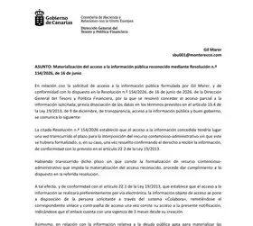
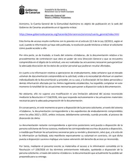

Pre-existing governance
The official CNMV register places José Acosta Matos on RICPE’s board from 4 November 2019, before the 2020 Sun Park investor communications.
GOVERNANCE 2019 → SUN PARK 2020 → CONDITIONALITY 2021 → REACTIVATION → RIC/HNT → PUBLIC SUPPORT
The record must reconstruct who introduced Sun Park, which prerequisites were mandatory, what each decision-maker knew, what was omitted or waived and under whose authority the project advanced.
Project Sun Rock alleges that the same Sun Park/MYND Yaiza hotel and substantially overlapping economic bases acquired several financial lives: Community, RICPE investor project, RIC/HNT finance, regional incentive, ERDF and current operation. The question is no longer whether several layers existed, but whether they reused the same assets, works, costs, jobs and value without a complete reconciliation.
The official CNMV register places José Acosta Matos on RICPE’s board from 4 November 2019, before the 2020 Sun Park investor communications.
Identify who introduced and sponsored the opportunity, what conflict declaration existed, who received information, who recused and which body approved each phase.
The governance relationship creates a traceability obligation. It does not by itself prove improper approval, collective knowledge or concerted conduct.
His public profile reports RIC Private Equity^ in 2024, legal advisory for Belagua 2013, S.A.^ / ACHM Spain Management, S.L.^ in 2025 and Colliers^ Debt Advisory in 2026. Official records separately tie Belagua and ACHM to AC Hotel Tenerife^. This creates a concrete witness/custody question; it does not prove that he worked on that hotel, a family relationship, Sun Park/Meridian exposure, information transfer, coordination or wrongdoing.
Identity correction: the located professional is Fernando Aguiar Acosta, not “Fernando Acosta Matos”; the Fernando in IREA's 2017 Sun Park correspondence was Fernando Banderas Monis. He is classified as a proposed witness/records custodian, not an adverse actor. ^ resolves identity only.
Her currently visible public résumé does not show direct RIC Private Equity employment. It records a July–August 2024 hotel-management placement with Canarian Hospitality^ involving the controllers of Sun Park, currently marketed as MYND Yaiza and Radisson Blu Lanzarote. RICPE's official project pages identify both hotels as RICPE-financed and connect the MYND Yaiza operation to Sun Park; RICPE's source page uses the formulation “former Sun Park”. That is a documented placement-and-asset bridge, not direct RICPE employment.
Attributed relationship and proof boundary: Gil Marer (the user) alleges that Laura and Fernando Aguiar Acosta^ are siblings; no located primary or reliable public source independently verifies it. Laura is classified only as a proposed fact / records-custody witness, not an adverse actor. Ask about her own duties, supervision, assignments, systems and records. Do not infer IREA, Colliers or Meridian knowledge, coordination, wrongdoing or liability from the placement, asset connection, matching surnames or attributed relationship.
Public résumé · RICPE: Sun Park, currently marketed as MYND Yaiza · RICPE: Radisson Blu Lanzarote.
^ resolves identity only; it does not prove employment, kinship, knowledge, intent, coordination, control or responsibility.
Who introduced the proposal described as a participating loan to an important Canary Islands business group, up to €2m, to refurbish apartments in Lanzarote for rental operation, within an approximately €11m investment and an opening then estimated for June 2020; what part of that description corresponded to Hotel Sun Park; and what conflict, information, recusal and approval were documented from inception?
The inquiry should not start only from the retrospective “Sun Park” label. It must identify the real asset, promoter, borrower, title, counterparty, valuation, security, timetable and decision-making body behind the description.
RICPE’s internal certification of 20 July also recorded the project’s earlier withdrawal. CAM filed it in Insolvency 36/2012 on 21 July 2021.
The complete chain must be produced: who authorised the certification, who authorised its court filing, what claim it supported, what RICPE knew of the external use, what the IA and Court did, and what later document justified moving from future ownership/incomplete DD to a reactivated, financeable project.
Control-accountability question: if CAM did not satisfy a requirement, who had to detect it, who knew, who could stop the project, who could waive it and what document allowed progression?
Each departure must be classified as a documented authorised waiver, control failure or unresolved evidential gap. A finding of deliberate disregard requires proof of knowledge, duty, capacity to act and conscious inaction.
Project Sun Rock identifies an approximately €9.77m CAM valuation in the concurso context and an approximately €11–12m investment requirement/proposition. The valuations must be produced rather than replaced by a generic banking rule.
Properties, common areas, rights, encumbrances, litigation, and LPB, Matkator and third-party assets.
Current, post-refurbishment, GDV, rent, occupancy, capex and sensitivity.
Equity, participating loan, RIC, subsidy, ERDF, bank finance, guarantees and conditions.
Question: what higher value, completed value, contribution, security or additional support bridged the difference, and was that basis consistent before RICPE, the insolvency, RIC, HNT, the incentive authority and ERDF controls?
| Layer | Amount / commitment | Status | Required control |
|---|---|---|---|
| Community November 2018 | Alleged ≈ €4.5m full refurbishment | Specific allegation; complete file pending | Minutes, vote, authority, funder, works, properties and IA/Court knowledge. |
| RICPE/HNT Series F–G | €6,573,703.10 total attributed to controlled audited accounts | Total usable with attribution; split open | Agreements, conditions, drawdowns, banks, invoices and use. |
| GC/836/P06 | €11,469,714 investment; €3,440,914.20 subsidy; 60 jobs | Published award | Eligible expenditure, other aid/finance, payment, employment and cumulation controls. |
| RICPE June 2023 | Alleged ≈ €4.9m / ≈86 jobs | Native source and relationship to total pending | Definition, beneficiary, instrument, costs, persons and periods. |
| Hotel operation | Alleged ≈50 FTE requirement | To be proved | Payroll, Social Security, rosters, outsourcing and hotel/group scope. |
Duplication allegation: compare the same invoices, works, employees, FTEs, payroll, assets and value. If the bases were distinct, the documents should prove the difference. If they overlapped, the overlap and applicable cumulation rule must be quantified.
28 AUGUST 2026 · DIRECTORATE-GENERAL FOR THE TREASURY AND FINANCIAL POLICY
Access recognised · implementation begun · partial production underway
The 28 August 2026 communication does not decide the access entitlement again. It gives effect to Resolution No. 154/2026 of 16 June, after stating that the Article 22.2 period under Law 19/2013 has elapsed without a recorded contentious-administrative appeal preventing implementation of the recognised access.
Resolution 154/2026. Partial access recognised, subject where appropriate to data dissociation.
Implementation. Treasury states that the recognised access is to be implemented through the Colabora system.
Procurement + 2022–2025 borrowing/debt files. The documentation prepared for delivery is being made available now.
Later financial years. The Directorate expressly provides for successive production after review and data dissociation.


The control sentence. The Directorate expressly states that the fact it has not yet completed all borrowing documentation does not constitute a modification of, or additional limitation upon, the access recognised; it also says that successive production of the remainder does not entail a new assessment of the right of access already recognised. The correct evidential status is therefore not “request pending” but partial access already recognised and undergoing material implementation by staged deliveries.
A recognised partial access entitlement exists; Treasury says the Article 22.2 temporal barrier no longer prevents implementation; production has begun; and procurement plus 2022–2025 borrowing/debt files are within the current delivery.
Remaining documentation for later financial years is expressly kept within the announced successive production. Each delivery should be preserved with an index, date, filename and cryptographic hash so completeness and omissions can later be measured.
It does not by itself establish any RIC/RICPE irregularity, misuse of funds, falsehood, conflict, liability of beneficiaries, counterparties or officials, or completeness of the files delivered. It opens a primary-document route for testing those questions.
Security and preservation: the notice says the Colabora link remains valid for three months from creation. The link and password are not published here. Original downloads, folder structure, metadata and hashes should be preserved off-site and reconciled against the perimeter recognised by Resolution 154/2026.
The notice also points under Article 22.3 to two already-published general sources: information on public debt eligible for materialising RIC allocations and the General Account of the Autonomous Community. Those portals are cross-checking points; they do not replace the individualised documentation Treasury is producing.
Original verification. Electronically signed by María Teresa Bosch Llinares, Director-General, on 28/08/2026 at 09:21:01. Electronic identifiers recorded in the document: RP001-000eBXqiy763lhhVPiF/SClag== and RP001-000epjv/pwkouQWERCwoVCagg==. The official verifier requires the relevant identifier to be entered.
Sun Park/MYND branch: title, DD, control, RICPE/RIC, HNT, regional incentive, ERDF and operation.
Orion branch: RICPE was founder/initial shareholder; the issue document describes RICPE participating finance; AGM manages. No inference that Sun Park money or value financed Orion without specific proof.
For Sun Park, the Orion question is presently limited to FMMM’s trajectory: how he moved from a paid property-administrator role in the Sun Park/Community environment into the later Pamalexsha/AGM/Orion perimeter, who facilitated that move and whether it bears on his duties, information, independence, incentives or conflicts.
No responsibility is attributed to Orion, JDAM, Shaila, Antonio or others by association.
Policies, proposal, committee, board, conflicts, recusals, conditions, waivers and monitoring.
Contracts, drawdowns, banks, invoices, certifications, eligible expenditure and other-aid declarations.
Property-by-property map, valuations, works, current use, employees/FTE, payroll and commitments.
The Treasury 7/2026 record consolidates the signed act, Colabora event, first delivery of 8 files / 734 pages and open later production while keeping Resolution 28/2026 separate.